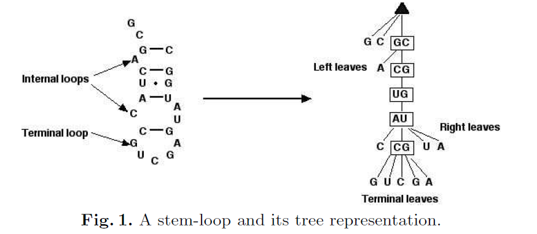

Implementation of Guignon, Chauve and Hamel Edit Distance Between RNA Stem-loop
Garvin Pang and Jeong Woo Choi
RNA Secondary Structure

- Generated from base pairing interactions between nucleotides in the RNA
- Secondary Structure of RNA are often in the form of stem-loops
Notable Secondary Structure
- tRNA

- Rho-independent Terminator

History
- Previously algorithms generated trees and calculated edit distance between them using limited set edit operations
- More recently, a algorithm that utilizes a larger set of edit operations. However, the algorithm is NP-Hard
For this paper
- Algorithm performs a conservative mapping between stem-loops
- Only considers edit operations between bases that are more closely located
- This allows a larger range of edit operations to be incorporated while running in polynomial time
Parsing RNA Structure
>RS000653|AF169230.1/225-380|Oryza sativa|5_8S_rRNA
GACUCUCGGCAACGGAUAUCUCGGCUCUCGCAUCGAUGAAGAACGUAGCGAAAUGCGAUACCUGGUGUGAAUUGCAGAAUCCCGUGAACCAUCGAGUCUUUGAACGCAAGUUGCGCCCGAGGCCAUCCGGCCGAGGGCACGCCUGCCUGGGCGUCA
..................................(.(...(((((((......))))..((.(((((((.(((....))).).).....))))).)).)))..))(((...)))((((..((((....))))..))))..................
Output
- Use RNAeval from Vienna RNA package by the Theoretical Biochemistry Group
Tree Representation of a Stem-loop
Edit Operations
Indexing Pairs: How we compare Stem-loops
- Pair of nodes that is able to create a subtree from the stem-loop
- Traverse through the stem-loop tree from first index node to the other index node in a DFS manner
- Remove all nodes it traversed
- Remainder is the subtree
- 5 ways to generate indexing pairs
Initialization
We will let (x,y) and (u,v) be indexing pairs of subtree T1 and T2 respectively from two different stem-loopsRecurrence
Four cases-
x=y and u=v
- Internal node to Internal node for both indexing pairs
-
x!=y and u=v
- Internal node to leaf
- Leaf to leaf (Both non-terminal)
- Terminal leaf to terminal leaf
- x=y and u!=v
- Vice Versa of 2
- x!=y and u!=v